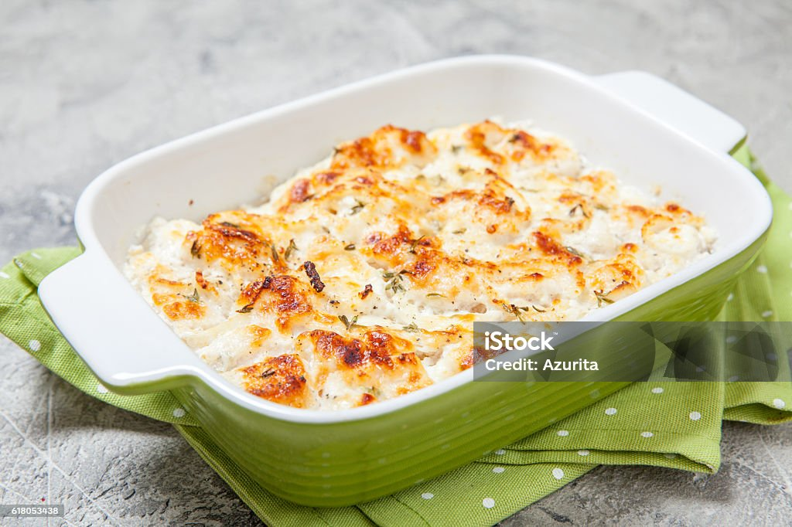

Olá pessoal, chamo-me Alcantra Neto Maneul e hoje deixare aqui a receita de como preparar o famoso bacalhau com natas, cremoso e gosto estilo a Portugal.
Basta olharem para ele e tal como na imagem vocês saberão o quão e perfeito está.
Nada melhor que uma receita tradicional portuguesa. Experimente esta receita de bacalhau com natas comingo, delicie-se enquanto prepara um prato que lhe trará água na boca.
Coza o bacalhau em água por 10 ápos a fervura. Escorra, reservando 150 ml da água da cozedura do bacalhau. Descasque as batatas, corte em rodelas e o frite até dourarem ligeiramente.
Amoleça no azeite as cebolas cortadas em rodelas e o alho picado. Acrescente as latas de bacalhau e os cubos de batata fritos. E misture tudo.
Para o molho bechamel: em lume brando, derreta a manteiga, acrescente a farinha e misture tudo muito bem até ficar uma pasta. cozinhe por 1 à 2 minutos. Aos poucos, acrescente a água de cozedura em lume brando, mexendo sempre com uma vara de arames (para não ficarem grumos), até espessar, ficando cremoso. Tempere de sal e pimenta-preta moída na hora e mexe.
Acrescente o bechamel à mistura de cebola, bacalhau e batatas. Adicione meio pacote de natas, espalhando bem.
Unte uma travessa com manteiga, disponha a mistura de bacalhau com natas, cubra com o restante pacote de natas, espalhando bem, espalhe o queijo ralado. Leve a gratinar no forno pré-aquecido a 200 graus celsios por 15 minutos.